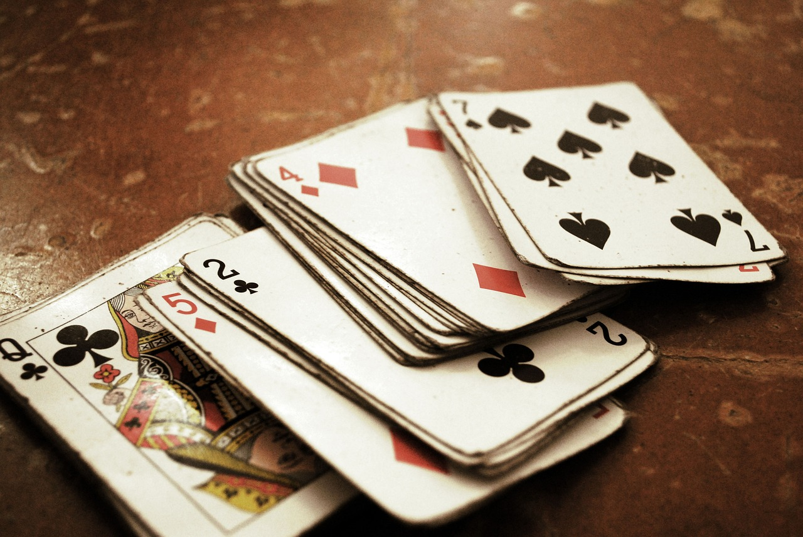
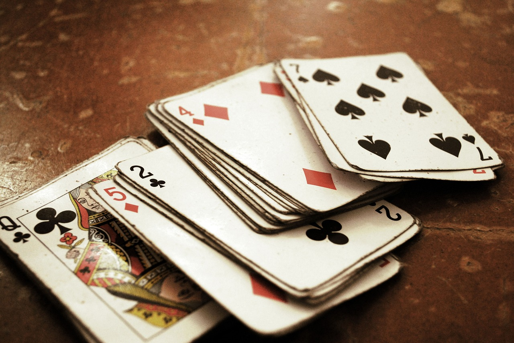
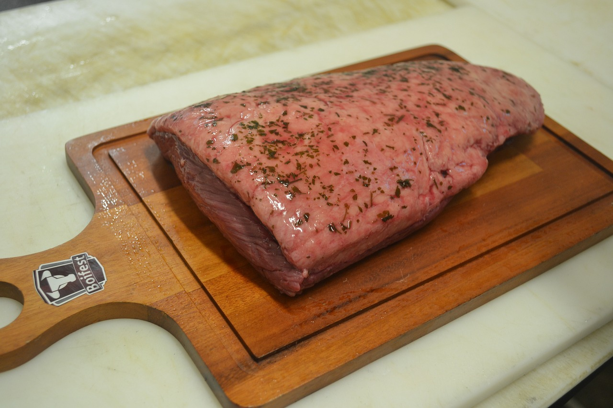
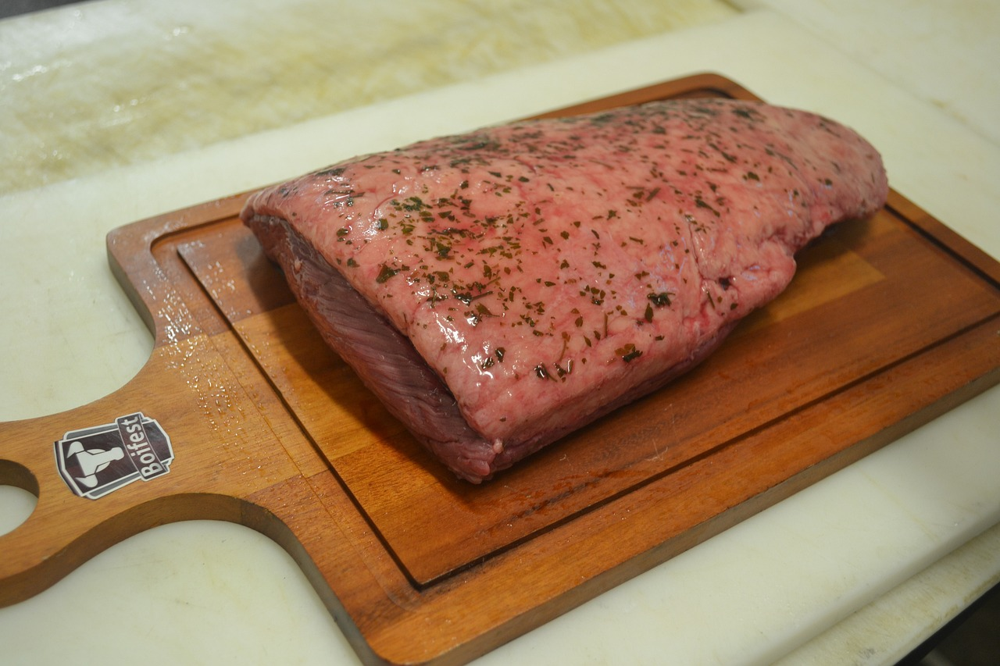
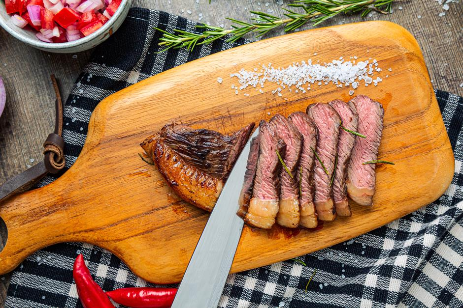
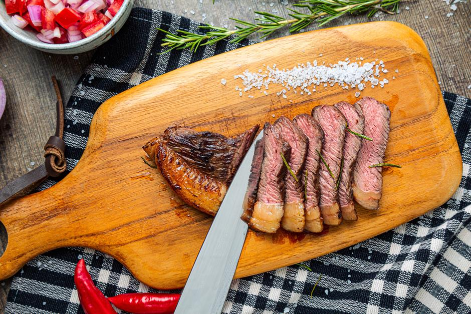
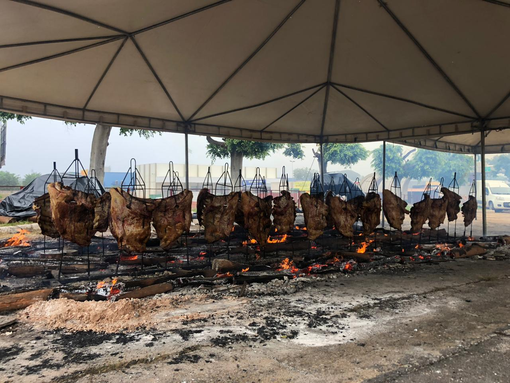
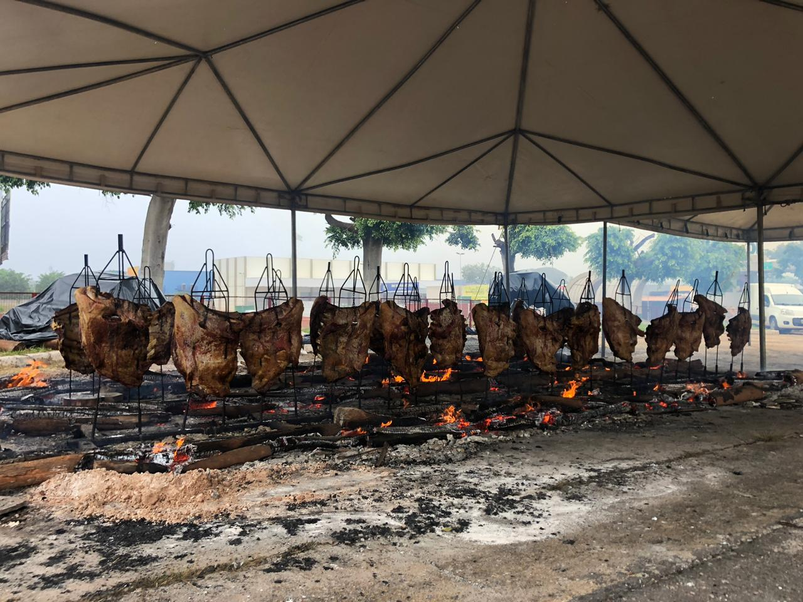

CHURRASCO
O que não pode faltar
Vamos começar pontuando os 10 itens que não podem falta num churrasco de verdade
- Carne
- Cerveja
- Refrigerante
- Sal grosso
- Queijo Coalho
- Gelo
- Carvão
- Pão de alho
- Panceta
- Música e Truuuuuuuuuco !
 

 


A Carne
- Acenda a churrasqueira com lenha e deixe pegar a brasa
- Coloque os cortes da carne na grelha para selar
- Lembre-se: mantenha a pacenda afastado do fogo
- Após selar as carnes corte nos pedaços proporcionais que serão assandos
- Faça os cortes transversais so sentido das fibras, isso ajudará a manter a macieis
- Salgue a quantidade de carne que irá assar e leve a grelha
- Não deixe a carne passar do ponto pelo amor de Deus ! Não estrague a carne
- Apenas a panceta deve ficar bem passada e lembre-se de deixar a gordura virada para o fogo no final do processo, isso ajudará a pururucar e deixar crocante
 

 
